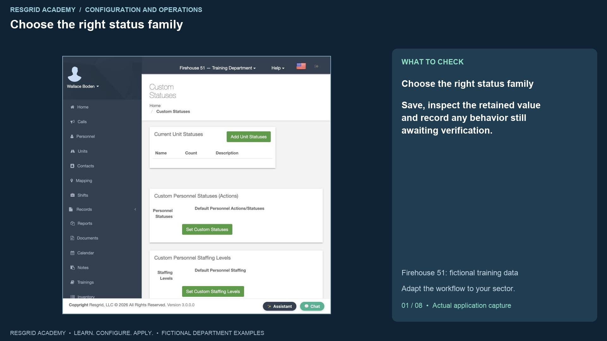
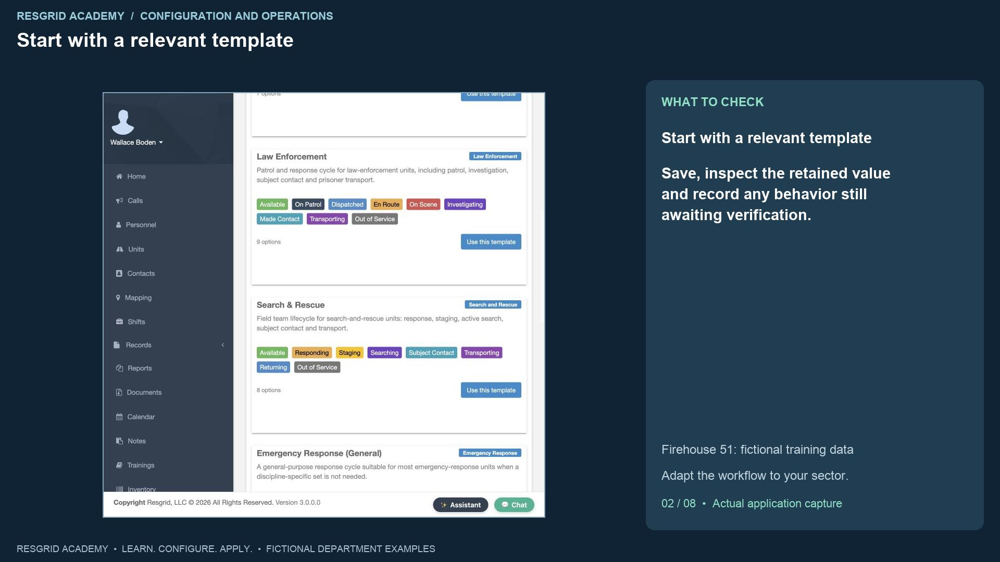
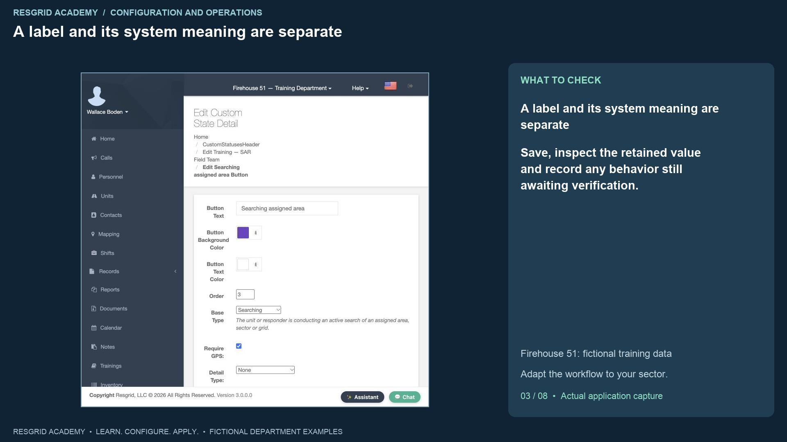
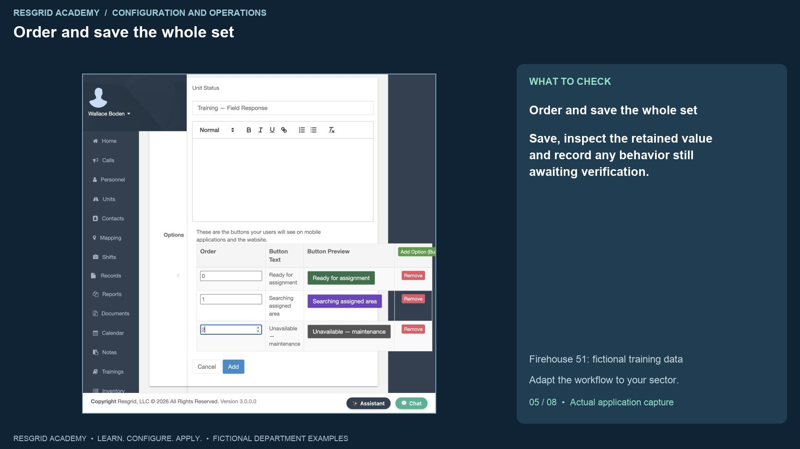
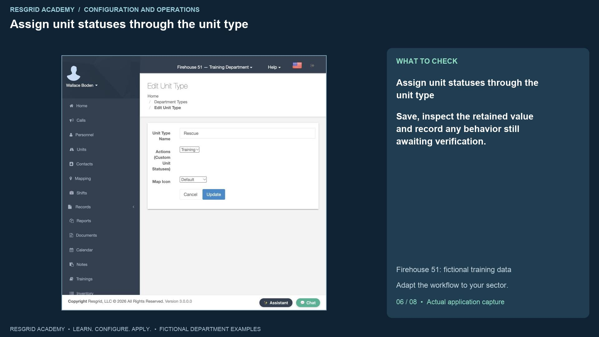
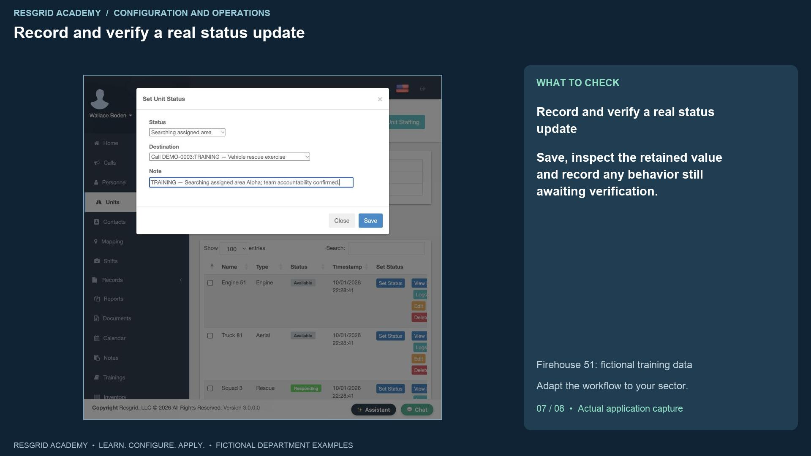

Configuration walkthrough
Create statuses with useful operational meaning
Follow each step, understand its impact, and try the practice exercise with your department.
Step 1
Choose the right status family

Read the transcript
Useful statuses let the department tell the difference between a resource that can accept work and a resource that is already doing something. Open the department menu and Custom Statuses. The page separates unit status sets, personnel actions, and personnel staffing levels. Unit status sets describe vehicles, apparatus or field resources. Personnel actions describe what a person is doing. Staffing describes whether that person is available. A security patrol can be available while On Patrol; a search volunteer can be unavailable for deployment even if the last activity says Standing By. Avoid trying to answer all those questions with one label. The Chicago Fire names are simply our synthetic demo roster. These status concepts also serve mobile response, search and rescue, security, wildland and industrial teams.
Step 2
Start with a relevant template

Read the transcript
Choose Add Unit Statuses. Resgrid offers starting templates for ambulance, fire, law enforcement, search and rescue, general response, disaster response, security, industrial fleets and logistics. Pick the one that fits the resource’s actual lifecycle. We choose Search and Rescue, name the set Training, S A R Field Team, and rename Searching to Searching assigned area. Templates prefill options; they do not save the set. You can review labels, colors and ordering before clicking Add. The saved set contains eight options. A security company can start from Security and use On Patrol and Investigating. An industrial team can use fleet and equipment states such as Maintenance. A mobile response team can use a reviewed response lifecycle. A wildland contractor can use staging and response states appropriate to its crews and apparatus.
Step 3
A label and its system meaning are separate

Read the transcript
Inspect an option’s Base Type. Searching has the meaning of actively searching an assigned area, sector or grid. A clearer button label can preserve that meaning. Choosing None creates an informational state without that system meaning. A label that says Ready should not be assigned an Unavailable meaning, and an attractive green button is not evidence of readiness. Review color contrast and use meaningful text so members do not have to rely on color alone. This build exposed an option-edit issue: changing the note and destination requirements and clicking Update returned to the list, but reopening the option showed the old values. We recorded that limitation and do not call the edit successful. The next part demonstrates recording the requirements during creation, then checking the saved result.
Step 4
Build an option with meaning and requirements
Read the transcript
Use Start from Blank to build the Training, Field Response set. Add Option opens the option dialog. Our first option is Ready for assignment with the Available base meaning, a dark green background, white text and an optional note. Our second is Searching assigned area with Searching meaning. We choose Calls as its detail type, Required for its note type, and Require G P S. These controls express different requirements: the detail supplies a destination such as an incident; the note supplies context; the location requirement supplies a position where supported by the client. A search team might record the assigned area and team accountability. A security patrol might record the site or investigation reference. Keep mobile response notes within approved operational-record procedures; a required note is not an invitation to place sensitive clinical detail in every status update.
Step 5
Order and save the whole set

Read the transcript
Our third option is Unavailable, maintenance, with the Unavailable meaning and a required note. This makes an equipment defect visible without suggesting that the resource remains ready for dispatch. Set the order to zero, one and two so Ready, Searching and Unavailable appear predictably. Adding an option to the dialog’s table is still an unsaved change. Click Add on the main form to save the entire set. The application returns to Custom Statuses and shows the three-option Field Response set. Review that result before assigning it. For an industrial response team, this pattern can keep defective equipment out of normal readiness assumptions. For wildland or search teams, it can distinguish staging and active work from unavailable equipment. More options are useful only if members can select them consistently.
Step 6
Assign unit statuses through the unit type

Read the transcript
A new unit status set needs to be assigned before a unit can use it. Open Types, find the Rescue unit type, and choose Field Response under Actions, Custom Unit Statuses. Save the assignment. This changes the status choices for every unit that uses the Rescue type in this department. Squad Three is our example rescue unit. Reopen its status picker and check that Ready for assignment, Searching assigned area, and Unavailable maintenance are present. For a security department, you might assign a patrol status set to its patrol vehicle type. For an industrial team, separate equipment types can use different operational choices. A type assignment changes the available choices for all units of that type. Changing one unit's current status affects that unit.
Step 7
Record and verify a real status update

Read the transcript
Select Searching assigned area. The destination picker now includes the active training calls because Calls was recorded at creation. We choose the vehicle rescue exercise and enter an accountability note for assigned area Alpha. Click Save. The unit list now displays Searching assigned area with a new timestamp for Squad Three. That is the observed saved result. The web path shown here does not demonstrate a device G P S capture or all mobile-client enforcement, so we do not claim that it proves the location requirement. Test the member and unit apps your department uses, including missing notes, unavailable location permission and offline conditions. A saved status is a declaration of activity; it does not prove the team completed a search, reached a subject, or has an independently verified position.
Step 8
Adapt and practice the workflow
Read the transcript
Personnel actions and staffing have separate template entry points on the original page. Before replacing either department-wide set, review existing reset targets, suppression selections, dispatch transitions and member training. For community paramedicine or mental health response, use approved operational states such as En route to visit or Contact made, with meanings appropriate to the work. For search and rescue, use Searching and Subject Contact. For security, use On Patrol and Investigating. For wildland contractors, use Staging, Responding and Returning. For industrial teams, distinguish response activity from equipment Maintenance and Unavailable. Your practice exercise is to create a small set in a training department, explain each option’s meaning, assign it to the intended unit type, save a real update and verify its display. Record any client behavior that still needs an operational test and assign the next review to the responsible person.
Apply it to your department
- Community paramedicine and mental health response
- Use labels such as En route to visit and Contact made with appropriate base meanings; include only approved operational notes.
- Search and rescue
- Use Searching assigned area with Searching meaning, an incident destination and an accountability note.
- Security companies and departments
- Use On patrol, Investigating and Made contact with the corresponding base meanings; distinguish availability from patrol activity.
- Wildland contractors
- Use Staging, Responding and Returning for crew movement; make notes capture the assigned division or staging point.
- Industrial emergency response teams
- Use Maintenance and Unavailable for defective equipment, and On scene for the response team; a label alone must not imply equipment readiness.
Put it into practice
Check your department’s enabled modules, permissions and provider configuration. Save each change on its own screen, review the retained value, and confirm the result with the people and devices that will use it.